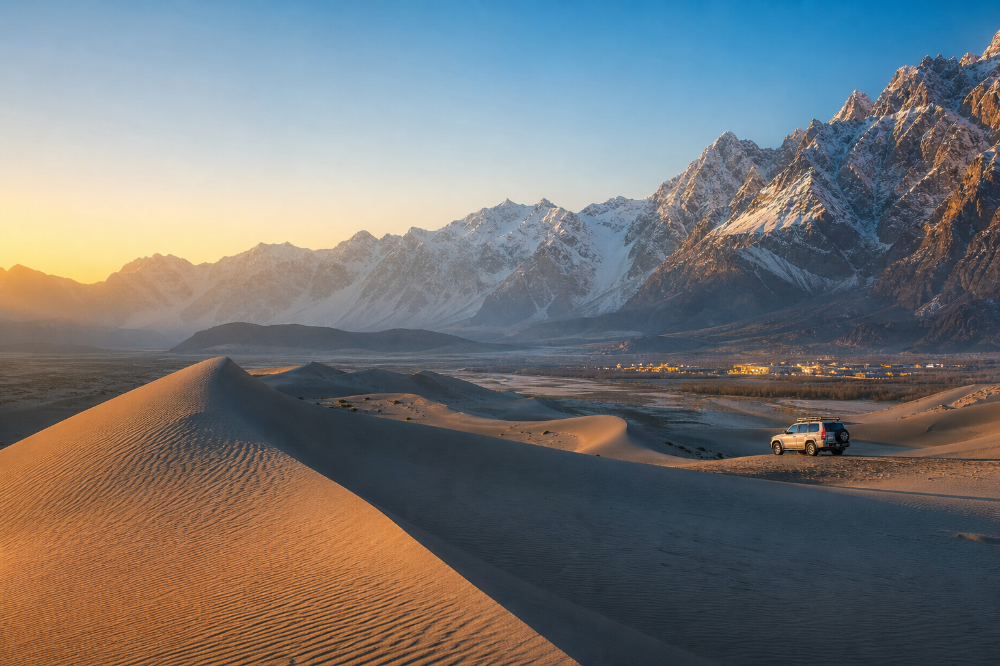

Desert-view hotels
Comfortable rooms close to Katpana Desert for travelers who want sunrise dunes, stargazing, and quick airport access.

Katpana Desert, Skardu, Gilgit-Baltistan
Stay near the cold desert, hire trusted local drivers, and explore Shangrila, Upper Kachura, Deosai, Shigar Fort, and Manthokha Waterfall with one simple plan.
Skardu tourism with local context
Katpana Desert is one of Skardu's most searched travel experiences because it combines high-altitude dunes, mountain views, night skies, and easy access to the airport and city. This project positions your service around that demand, then connects visitors to hotels, car rentals, and the attraction points they are already searching for.
Hotels and stays
Comfortable rooms close to Katpana Desert for travelers who want sunrise dunes, stargazing, and quick airport access.
Budget-friendly Skardu guest houses with heating, parking, and easy pickup for day tours around the valley.
Curated options for couples, families, and tour groups with flexible meal plans and local activity add-ons.
Rent a car in Skardu
Offer airport pickup, hotel transfer, day rentals, and full Skardu tour cars. The page gives tourists confidence by explaining which vehicle fits each route.
Attraction points
Cold desert dunes, mountain views, sunrise photography, and clear night skies near Skardu Airport.
A classic Skardu lake stop for families, couples, and first-time visitors exploring Lower Kachura.
Boating, trout meals, village walks, and scenic blue-water views within a popular day route.
High plains, wildlife, Sheosar Lake, and unforgettable summer landscapes best visited by 4x4.
Historic architecture, gardens, local food, and a beautiful drive through Shigar Valley.
A refreshing full-day route with dramatic cliffs, village scenery, and picnic-friendly stops.
Suggested route
Booking request
Replace the contact details with your WhatsApp number, email, and real hotel partners before publishing. The layout is ready for leads and SEO traffic.